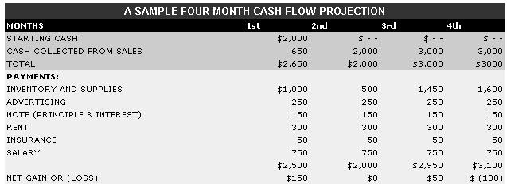

A good many of you folks have let us know just how much you enjoy the down-to-earth, practical, bootstrap business articles that are featured in each and every issue of this publication. Furthermore, lots of you also tell us that you actually use the information in our stories to form successful shoestring enterprises!
Well, because MOTHER realizes that good sound entrepreneurial advice is often hard for the bootstrapper to come by, we've asked Dan Ogden to produce a regular column detailing just that sort of how-to-do-it home business information. (And Dan is certainly qualified to offer such advice. After all, he entered into his first business venture in 1976 with an initial investment of $850 and, by the time he decided to look for a new challenge in 1979, found that he'd helped to build a three-million-dollar enterprise!)
HOW TO GET A LOAN FROM A BANKER
Financing seems to be a problem for many folks who are in the process of starting up in business. Of course, "financing" is just a $2.00 word for "money" . . . and-in this first column-I'm going to tell you just how to go about borrowing some cash to back your particular bright idea.
Your first task will be to find the right banker. Keep in mind that such men and women can't make any cash for their institutions unless they first lend money to someone else . . . and remember, too, that riskier loans generally bring in higher interest rates. So, while you may be presenting the moneylender with a loan idea that's less of a sure thing than-say-a real estate mortgage, you're also giving him or her the chance to make a lot more money in interest charges!
But just how do you go about "shopping" for a banker? Well, the best way to do so is by asking other entrepreneurs to tell you who helped them get started. Every business has to begin somewhere, and chances are you'll find out about ventures that began with the help of a local banker. Banks tend to specialize in their dealings, too, and your questions should soon lead you to someone who likes to cater to the needs of small business folk.
However, after you locate a banker-even if he or she is experienced with and sympathetic to the needs of home businesses, and has a track record of lending money to such ventures-your loan will depend upon your ability to present that man or woman (who, thanks to your shopping, will at least be willing to listen) with a reasonable proposal. Now, the factor determining the success or failure of such a proposition is frequently not so much its specific content as it is the manner in which it's presented.
I called the president of a local (Connecticut) lending institution-the fellow's n ame is Jim Banks . . . he's one of those "good" lenders and often goes out of his way to help small businesses-to ask him what he looks for in a loan seeker.
"The most important thing is evidence that the applicant has thought the business out," Jim told me. "I want to see that his or her plans are realistic and somewhat detailed. The loan-seeker should present a monthly cash flow projection, a business plan, a personal resume, and a personal balance sheet."
HERE'S HOW IT'S DONE
As Jim says, a monthly cash flow projection is one of the basic "tools" of the finance-seeking businessperson. The document shows the banker that you've put some thought into your business idea. (The example that accompanies this article has been kept simple enough to be applicable to almost any business.)
Now when you present your projection to the banker, you won't have the $2,000-or whatever figure fits your needs-in starting cash shown at the top of the list (this is the money you're there to borrow ... it's called "working capital", or the amount that's on hand to pay bills before your business starts bringing in cash). You simply have to be able to show him or her that a loan of $2,000 would give you the necessary working capital. You should also be able to show-with your cash flow figures-that your income will be great enough to pay off the loan within a specific period of time.
The business plan is a description of your market (telling which people, where, will buy from you . . . and why), your services or products, your means of attracting customers, and your plans for managing the business. The more detailed this summary is, the better your chances of obtain ing a loan will be . . . the plan ought to easily fill up a couple of typed, double-spaced pages.
Most folks think of the personal resume as being useful only when looking for a job. But the relationship between employer and employee has a lot in common with that between banker and businessman or -woman. The person lending you money will want to know just who it is that he or she is dealing with!
The most important factor in preparing your personal balance sheet (which will list what you own and what you owe) is accuracy. Don't overlook assets such as autos, furnishings, etc.-most folks are "worth" more than they think-but don't try to inflate your wealth, either. The worst thing you can do when seeking a loan is to appear unrealistic in your approach to money. If your balance sheet shows you to be nearly broke, the fact that you're willing to face up to the unfortunate state of affairs may have greater influence on the banker than does the size of your bank account!
This last point leads me to the most important ingredient in all segments of your presentation: HONESTY. Don't try to look better off than you are . . . don't hide business failures in your background . . . don't overstate your financial projections ... and don't ask for more money than you need, thinking the banker will reduce the amount automatically.
In conclusion, always remember-when trying to secure a loan-that you'll be dealing with a reasonable human being who, at the outset, is probably every bit as interested in saying "yes" as in saying "no". If you've prepared your "case" well (and if you present it with a positive attitude and genuine, but controlled, enthusiasm), the odds are that you will find a banker who's willing to join you in your exciting vision of the future. Good hunting!
EDITOR'S NOTE: Dan is working on a number of projects that should be of great interest to MOTHER's entrepreneurs . . . including perhaps a real in-depth subscription newsletter, a series of home business manuals and handbooks, and more. Look for details in Be Your Own Boss, MOTHER NO. 66!
|
|
 |
|